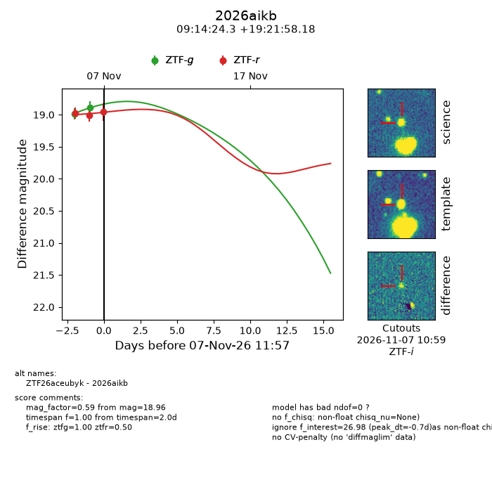
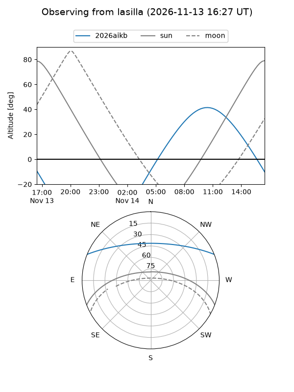
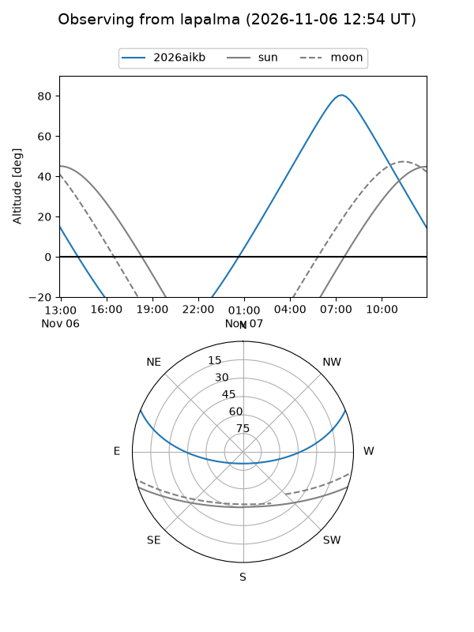
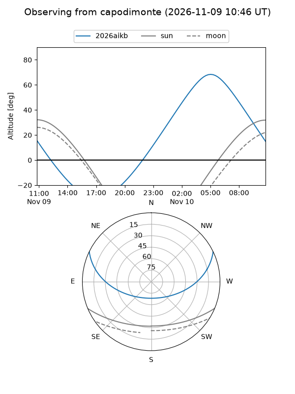
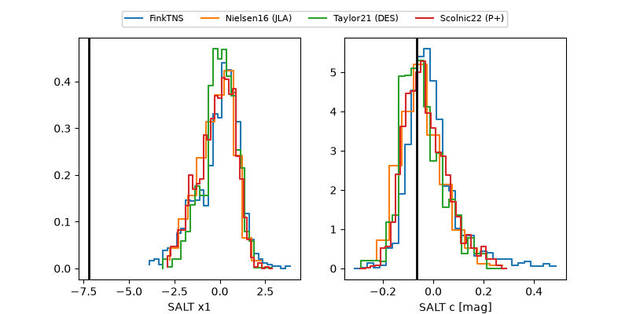

2026aikb
Target 2026aikb at 2026-11-07 11:59
Aliases and brokers:
FINK-ZTF: ztf.fink-portal.org/ZTF26aceubyk
Lasair-ZTF: lasair-ztf.lsst.ac.uk/objects/ZTF26aceubyk
ALeRCE-ZTF: alerce.online/object/ZTF26aceubyk
YSE-PZ: ziggy.ucolick.org/yse/transient_detail/2026aikb
TNS name: wis-tns.org/object/2026aikb
Direct TNS query: direct search
alt names
ZTF26aceubyk (ztf,fink_ztf)
2026aikb (tns,yse)
Coordinates:
equatorial (ra, dec) = 138.6012,+19.36616
equatorial (HMS+DMS) = 09:14:24.29,+19:21:58.18
galactic (l, b) = (209.6552,+39.91586)
Flags:
peak dt: -0.7
Photometry:
last ztfg=18.89, ztfr=18.96
2 ztfg, 3 ztfr detections
Lightcurve

Visibility



Additional plots
